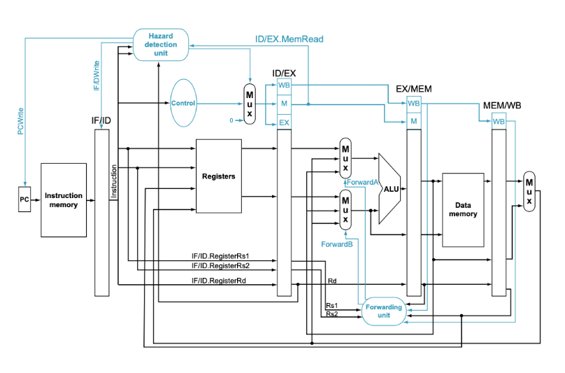
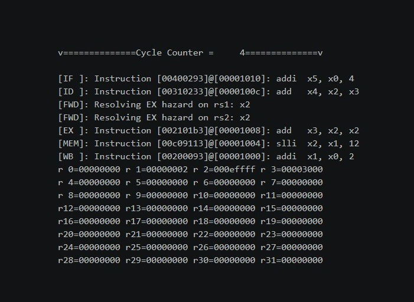

The RISC-V simulator was a pipeline accurate simulator coded in C using VS code to access a Linux enviroment. The simulator was capable of running all RISC-V instructions accurately to the register values and system state every pipeline cycle. In addition, proper error handling was implimented through forwarding and stalling.

Overview image of the simulator components

Sample simulator output
This was my first project in C, and my first big project using Linux. While I have used C++ before, it was interesting to see the differences in C. The main thing I learned from this project was debugging skills, as many major bugs were encountered. The most major bug I encountered was a bug in flushing the pipeline.
Clean cuts, and still cuts a tomato vs Benjammin is in the house!!!